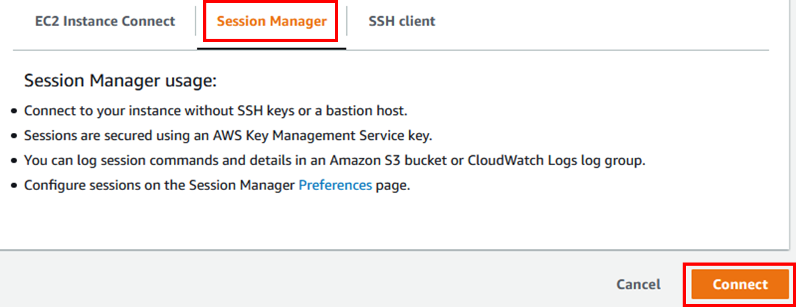

Task 03. Perform SAP HANA System Replica
클러스터 TakeOver 또는 장애 복구가 빠르게 발생하거나 TakeOver가 완료되기 전에 노드가 클러스터에 다시 가입하는 일부 시나리오에서는 SAP HANA 시스템 복제의 일관성이 깨지는 상태가 될 수 있으며 전체 시스템 복제본에 대해 수동으로 강제 동기화를 수행해야 할 수 있습니다.
Cluster Maintenance Mode 설정
Primary node인 prihana에서 클러스터를 유지 관리 모드로 설정
-
Management Console에 로그인 한 뒤 EC2 Instance Console에 접속 합니다.
-
HANA-HDB-Primary 인스턴스를 선택하고, Connect 버튼을 누릅니다.
-
Session Manager 를 선택하고, Connect 버튼을 누릅니다.
-
Session Manager를 통해 prihana 인스턴스에 접속합니다.
 -
클러스터를 유지 관리 모드로 설정 (root 유저사용)
- HANA Database의 시스템 복제 동기화를 수행하기 위해 아래 명령어를 수행하여 클러스터를 유지관리 모드로 설정합니다.
sudo su - crm configure property maintenance-mode=true -
Cluster의 상태를 체크 합니다.
- crm_mon 은 Cluster의 현재 상태를 제공하는 명령어 입니다.(root 유저사용)
- 아래 명령어를 수행하여 Cluster 가 unmanaged 상태인지 확인 합니다.
sudo su - crm_mon -rfn1 -
hdbadm으로 로그인하여 복제 상태를 확인합니다.
su – hdbadm HDBSettings.sh systemReplicationStatus.py exit
SAP HANA system replica
Secondary node인 sechana에서 SAP HANA system replication 수작업 실행
-
EC2 Instance Console에 접속 합니다.
-
HANA-HDB-Secondary 인스턴스를 선택하고, Connect 버튼을 누릅니다.

-
Session Manager 를 선택하고, Connect 버튼을 누릅니다. Session Manager를 통해 sechana 인스턴스에 접속합니다.
-
hdbadm으로 로그인 하여 Secondary SAP HANA Database를 중지합니다. (hdbadm 유저 사용)
su – hdbadm HDB stop exit -
전체 복제본으로 새 시스템 복제 등록을 실행합니다. (hdbadm 유저 사용)
su – hdbadm hdbnsutil -sr_register --name=HAS --remoteHost=prihana --remoteInstance=00 --replicationMode=sync --force_full_replica exit -
Secondary SAP HANA Database 시작합니다. (hdbadm 유저 사용)
su – hdbadm HDB start exit
Cluster Maintenance Mode 해제
Primary node인 prihana에서 클러스터를 상태 확인 후 유지 관리 모드를 해제합니다.
-
Primary Node에서 전체 복제본 상태를 확인할 수 있습니다. (hdbadm 유저 사용)
sudo su - hdbadm watch -n 1 HDBSettings.sh systemReplicationStatus.py exit -
SAP HANA system replication작업이 완료되었으므로 클러스터의 유지 관리 모드를 해제합니다. (root 유저사용)
sudo su - crm configure property maintenance-mode=false -
Cluster의 상태를 체크 합니다.
- crm_mon 은 Cluster의 현재 상태를 제공하는 명령어 입니다.(root 유저사용)
- 아래 명령어를 수행하여 Cluster 가 정상적인 운영 상태로 변경되었는 지 확인 합니다.
sudo su - crm_mon -rfn1